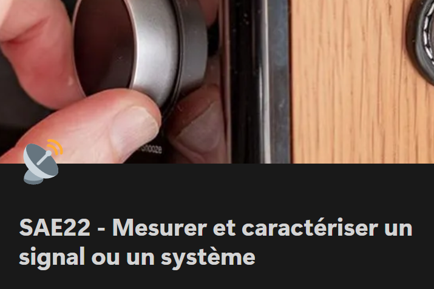

Présentation :
Ce projet nous a fait découvrir le spectre électromagnétique en explorant les différents systèmes de
transmission sans fil qui nous entourent.
Il y avait 2 parties dans ce projet : une première partie en
groupe de 6 où nous avons fait une étude générale du spectre de radiofréquence grâce à l'ANFR (l'Agence
Nationale des Fréquences) et à un script MATLAB.
Puis, une seconde partie en
binôme où nous avons étudié le spectre de la téléphonie mobile de l'opérateur de notre choix près de l'IUT.
L'objectif était de prouver qu'on recevait bien des ondes de l'opérateur qu'on avait sélectionné (pour notre
binôme : Bouygues Télécom).
Avec ce projet, j'ai appris :
RT2 - Connecter les entreprises et les usagers
Niveau 1 : Découvrir les transmissions et la ToIP :
Ma Contribution :
Lors de la première partie j'ai aidé à corriger des formules de calcul de puissance dans le script MATLAB.
J'ai également fait de nombreuses recherches sur les formules à utiliser et les calculs à effectuer. J'ai su
faire un lien entre les résultats que j'obtenais et les résultats attendus.
Puis, lors de la seconde partie j'ai également aidé à modifer le script MATLAB pour qu'il réponde aux
besoins attendus.
J'ai pris des initiatives pour obtenir les résultats les plus optimaux : j'ai utilisé
un téléphone chez l'opérateur Bouygues qui envoyait des informations à notre antenne pour être certaine de
mes résultats.
Preuves :
Analyse du projet et auto-évaluation :
Ce projet m'a permis de développer mes compétences en télécommunications, notamment en étude du spectre qui
est était initialement une de mes plus grandes lacunes !
J'ai su me motiver et m'impliquer pleinement dans mon travail afin d'obtenir la note la plus haute
possible
!
J'ai développé mes compétences en analyse spectrale et j'ai su faire le lien entre des formules
mathématiques complexes et les phénomènes réels.
Lors de ce projet nous n'avons pas rencontré de difficultés particulières car nous avons su anticiper !
L'un
des problèmes qui aurait pu arriver était qu'on ne trouve pas les résultats attendus car nous ne caption pas
les antennes 4G : pour résoudre ce problème nous nous sommes placés le plus proches de fenêtres possible
afin de maximiser nos chances, et cela a fonctionné !